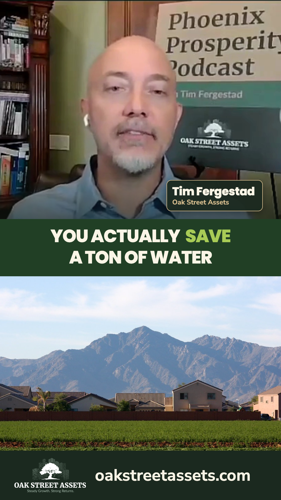
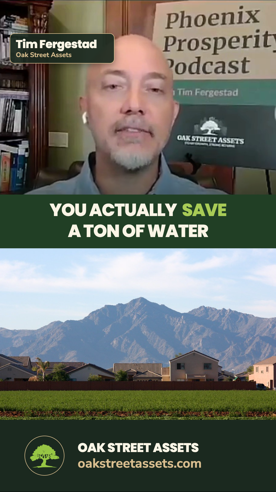

Two clipping layouts on the same Oak Street clip
Swipe between the options on your phone. Only the layout changes.


Static design previews. The video has not changed. Photo: Kevin Dooley, CC BY 2.0, cropped.
Swipe between the options on your phone. Only the layout changes.


Static design previews. The video has not changed. Photo: Kevin Dooley, CC BY 2.0, cropped.